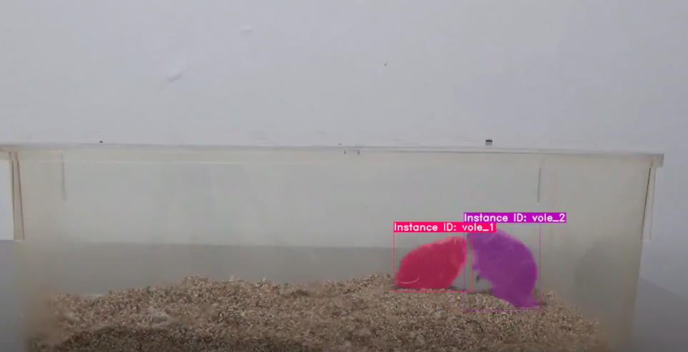
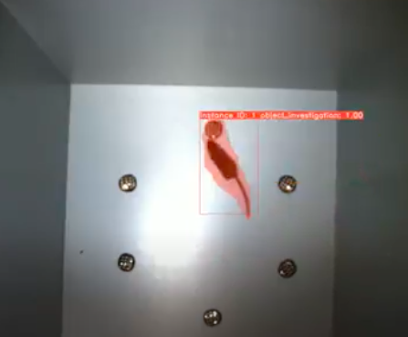
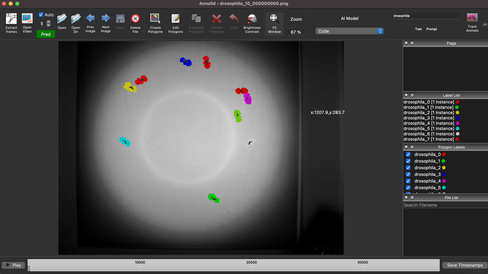
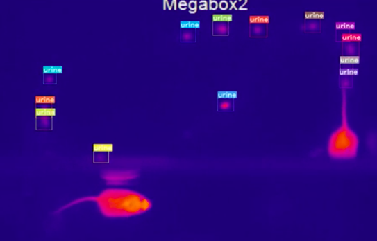

Introduction#
Annolid stands for Annotation + Annelid (segmentation). It is an open-source research platform that brings annotation, instance segmentation, multi-animal tracking, pose keypoints, behavior scoring, quantitative reporting, microscopy/3D brain reconstruction, and 3D digital animal simulations into one cohesive workspace.
annolid-run CLI, and Annolid Bot copilot
What You Can Do With Annolid Today#
Label faster with AI assistance: Draw accurate instance masks with a few clicks using SAM AI-Polygons, bootstrap masks with text prompts (Grounding DINO → SAM or SAM3), and place anatomical keypoints directly on video frames with the Keypoint Sequencer.
Track multiple animals through occlusions: Propagate masks from a single labeled frame with Cutie, SAM3, or INSID3, and track sparse body-part landmarks with DINOv3 Keypoint Tracking, TAPNext (ONNX), or CoWTracker.
Review and repair tracks efficiently: Run automated Track QC to pinpoint occlusion gaps, velocity spikes, and identity-swap suspects, jump directly to flagged frames, repair identities with Identity Governor, or re-propagate cleanly.
Score & search behaviors: Mark ethogram bouts on the synchronized Timeline and Flags docks, search hours of video by plain English with ONNX EmbeddingGemma 2, run 1-second Annolid Bot segment labeling, define reusable Zones, and import/export BORIS projects.
Generate publication-grade analytics: Compute calibrated kinematics (
px_per_cmor planar homography), freezing bouts, inter-rater reliability (IRR), cohort statistics, and self-contained HTML5 + inline SVG reports.Train custom models, run live cameras & simulate in 3D: Fine-tune YOLO11 / YOLO26 / YOLOE locally or on Google Colab, run real-time wireless/multi-camera detection, reconstruct 3D coronal brain slices from large TIFF stacks, or generate matched synthetic datasets from offline Two-Mouse 3D, Rat NCAP 3D, and FlyBody twins.
Real-World Visual Showcase#
Multi-animal social tracking, 14 keypoints & live ethogram state#
In a real resident-intruder home-cage trial (mouse083_task1_annotator1, 4,881 frames @ 30 FPS), Annolid tracks both whole-body polygons and 14 anatomical landmarks while synchronizing social behavior bouts (investigation, mount, other):
Fig. 1 Multi-animal instance masks, 7-keypoint skeletons per mouse, trajectory trails, and live behavior overlays on home-cage video. See the full mouse083 walkthrough.#
Diverse species, arenas, and research paradigms#

Whole-body instance tracking through close huddles and partial body occlusion in side-view home cages.

Track animals alongside arena stimuli and automatically associate proximity with user-defined zones.

Simultaneous identity-preserving tracking of eight flies in an open-field circular arena.

Segment non-standard targets such as thermal urine deposits, large TIFF brain sections, and multi-channel frames.
Video Demonstrations#
Brief overview of Annolid#
Keypoint tracking & automated behavior recognition#
Multiple animal tracking with partial occlusion#
Video courtesy of Caitlyn Finton and Alex Ophir.
Freezing behavior & optical-flow motion scoring#
Large field-of-view multi-animal tracking#
Video courtesy of Santiago Forero and Alex Ophir.
Explore More Examples#
Browse the full Annolid YouTube tutorial playlist.
Need help with your own recordings or species? Reach out via Get in touch.
Ready to see how all the pieces connect? Continue to How Annolid Works (Technical Overview).